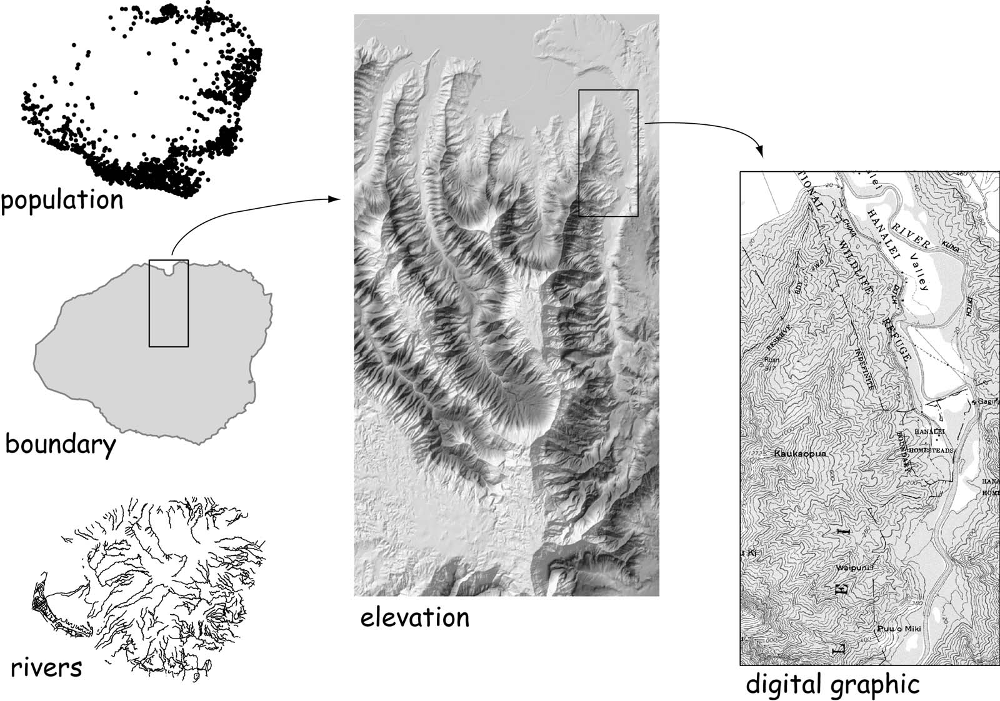
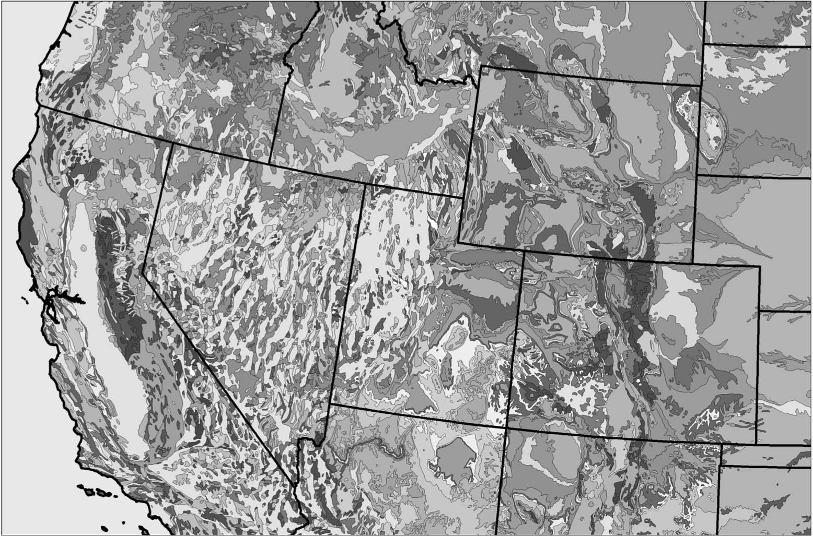

Week 7:
Digital Data
Intro to GISEvan Lue, PhD
Digital Data
Range of themes, extents, scales, and data types
Bolstad 2012, Fig 7.1
Scales of Government
- Local (City and County)
- State
- Federal
Why Governments Create Data
Public Services for:
- Safety
- Health
- Transportation
- Water
- Energy
- Disaster management
- Defense
Geoportals
Screen capture of the Pasadena GIS Portal
Local Data vs. Map Services
Local Data
Map Services
Example of Local Data vs. Map Services
Lets check out ARTS Bus Stops from the City of Pasadena's portal. We will open it as local data and as a map service in ArcGIS.com
Non-Governmental Organizations
Mentioned in the Book
- Center for International Earth Science Information Network (Columbia)
- Global Land Covber Facility (U of Maryland)
- Natural Earth
- Global Spatial Dataset Infrastructure (GSDI)
- OpenStreetMap
OpenStreetMap (OSM)
Screenshot from openstreetmap.org
Terms related to OSM
Crowdsourcing – general term for contributions by many people to a single goal. Example: Kickstarter
Citizen Science – general term for work done by citizens to contribute to a science project, usually organized by a scientist. Example: The Cornell Lab
Public Participation GIS (PPGIS) – specifically geographic. Inclusion of public input in a project that involves GIS to leverage local expertise. Example: planning/policy projects
Volunteered Geographic Information (VGI) – specifically geographic and web-based. Content voluntarily provided by many people. Example: OpenStreetMap
Agencies within the US
FGDC – Federal Geographic Data Committee, oversses the National Spatial Data Infrastructure (NSDI)
USGS – United States Geological Survey (National Map)
NGA – National Geospatial-Intelligence Agency
Many others certainly create GIS data, such as NOAA (which oversees the National Geodetic Survey), USDA, Forest Service, Fish and Wildlife, FEMA, Homeland Security, etc.
National Map
Many great datasets available nationwide, including elevation, imagery, hydrology, etc.
Screenshot from nationalmap.gov
Legacy Data
When data is no longer updated/collected (at least in the same way) but it is still made available because people might want to use it, it's called legacy data.
Why should we care about legacy data?
USGS Topo Maps
7.5 minute maps, 1:24K
Bolstad 2012, Fig 7.6
Topo Map Info
Quadrangle - a rectangular map bounded by lines of latitude and longitude, often a map sheet in either the 7.5-minute or 15-minute series published by the U.S. Geological Survey. Quadrangles are also called topo sheets.
You may sometimes hear these terms topoquad and orthoquad. This is where the quad comes from.
You can download Topo Maps (for free!) at the USGS Store.
Explore Topo Maps
Download a Topo Map of Pasadena.
Download a Topo Map of Manhattan.
How are they different?
These files have geographic capabilities and are called GeoPDFs. You can easily create these in ArcMap. More information on the Adobe website can be found here.
DEM
You should know what this stands for by now!
This is a hillshade generated from a DEM. We will explore DEMs in the Terrain Analysis lecture.
Bolstad 2012, Fig 7.8
LiDAR DEM
6m pixel size, 1m contours
Bolstad 2012, Fig 7.9
National Elevation Dataset (NED)
Created by the USGS, available at 3m, 10m, and 30m
Bolstad 2012, Fig 7.10
Elevation Over Time
Some Years Ago
Year 2000
Bolstad 2012, Fig 7.11
National Hydrologic Dataset (NHD)
Contains many features and attributes. NHDPlus is an updated version where applicable.
Bolstad 2012, Fig 7.12
NHD Hydrologic Unit Code (HUC)
Similar to the FIPS (Federal Information Processing Standard) codes you've seen for census data.
Bolstad 2012, Fig 7.13
Imagery
What's an orthophoto?
Bolstad 2012, Fig 7.16
More Before and After
1940's vs 2008
Bolstad 2012, Fig 7.17
NAIP
National Aerial Imagery Program, primarily to monitor agricultural landscapes
Concerned with the timing of vegetation growth
Bolstad 2012, Fig 7.18
NLCD
National Land Cover Data, 1992, 2001, 2006, and 2011
Image from mrlc.gov
NLCD Detailed
Made with 30m Landsat data

Bolstad 2012, Fig 7.20
NLCD 2001 Classes
Bolstad 2012, Table 7.1
NASS CDL
National Agricultural Statistical Service Crop Data Layer
Bolstad 2012, Fig 7.21
National Wetlands Inventory (NWI)
MMU of 0.5 to 2 hectares
Bolstad 2012, Fig 7.22
Soil Acronyms
- USDA - US Department of Agriculture
- NRCS - Natural Resource Convervation Service
- NATSGO - National Soil Geography
- STATSGO - State Soil Geographic
- SSURGO - Soil Survey Geographic
- MUIR - Map Unit Interpretations Record
STATSGO
Bolstad 2012, Fig 7.23
SSURGO Database Schema with MUIR
Bolstad 2012, Fig 7.24
Floodplains
Federal Emergency Management Agency (FEMA)
Bolstad 2012, Fig 7.26
Geology
Mineral resources data at http://mrdata.usgs.gov
Bolstad 2012, Fig 7.27
Precipitation and Climate
Climate records at http://gis.ncdc.noaa.gov/
Bolstad 2012, Fig 7.28
Census
Census data here
Bolstad 2012, Fig 7.29
TIGER - Topologically integrated Geographic Enconding and Referencing
Image from the US Census Bureau
Topological Encoding
Bolstad 2012, Fig 7.30
Address Range Interpolation
This is how some geocoders (programs that find convert addresses into coordinates) work.
Bolstad 2012, Fig 7.31
Census Boundaries for Many Things
Bolstad 2012, Fig 7.32